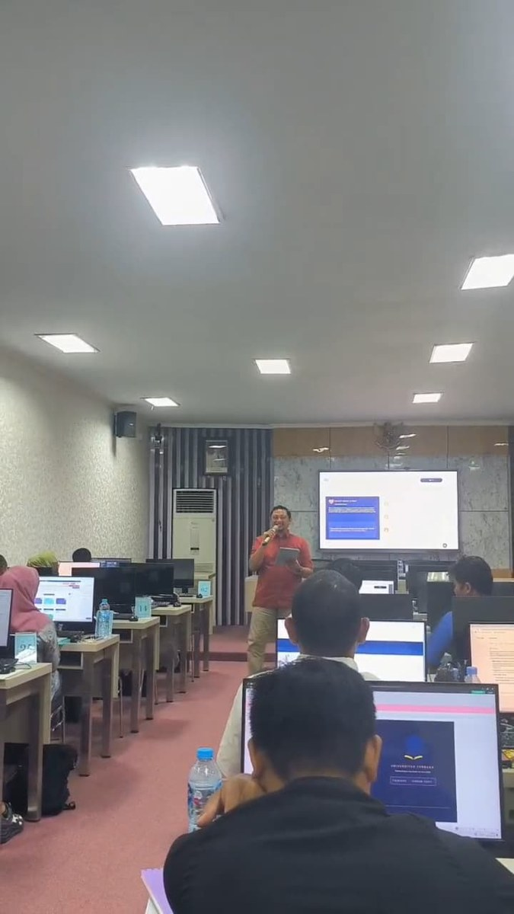

Kuliah Sambil Kerja di Samarinda 2026, Panduan Lengkap Kuliah Online UT untuk Karyawan & ASN
Banyak pekerja di Samarinda ingin melanjutkan kuliah, tapi terhalang waktu kerja yang padat. Kabar baiknya: kuliah sambil kerja di Samarinda sangat mungkin melalui Universitas Terbuka (UT), sistem kuliah online resmi yang tidak mengharuskan Anda datang ke kampus. Artikel ini menjelaskan cara kerjanya, untuk siapa cocoknya, dan bagaimana Salut Etam Betuah mendampingi Anda hingga wisuda.
Kenapa Kuliah Sambil Kerja di UT Sangat Cocok?
Universitas Terbuka menerapkan sistem Pendidikan Jarak Jauh (PJJ). Berbeda dengan kampus konvensional, di UT Anda tidak perlu hadir di kelas setiap hari. Semua materi diakses online melalui Tutorial Online (Tuton), dan ujian bisa dijadwalkan. Inilah yang membuat ribuan karyawan, ASN, guru, dan wirausaha di Samarinda memilih UT: kuliah jalan, kerja tetap jalan.


Cocok untuk Siapa Saja?
Bagaimana Sistem Kuliahnya?
- Belajar mandiri dari modul digital & buku materi pokok (BMP)
- Tutorial Online (Tuton) via elearning.ut.ac.id: baca materi, diskusi, kerjakan tugas
- Tutorial Tatap Muka (TTM) opsional di Salut Etam Betuah untuk materi sulit (akhir pekan)
- Ujian Akhir Semester (UAS) dijadwalkan, bisa di lokasi terdekat
Langkah Mulai Kuliah Sambil Kerja
- 1. Konsultasi gratis: hubungi Salut Etam Betuah, ceritakan latar belakang & tujuan Anda
- 2. Pilih jalur: Reguler (lulusan SMA) atau RPL (punya D3/pengalaman kerja, bisa lulus lebih cepat)
- 3. Siapkan dokumen: ijazah terakhir, KTP, pas foto
- 4. Daftar & bayar: bisa dicicil, dibantu admin Salut
- 5. Mulai kuliah online: akses Tuton dari HP/laptop, kapan saja
Siap Kuliah Sambil Kerja?
Konsultasi gratis dengan Salut Etam Betuah. Kami bantu pilih jurusan yang cocok dengan pekerjaan & tujuan karier Anda.
💬 Konsultasi Gratis via WhatsApp